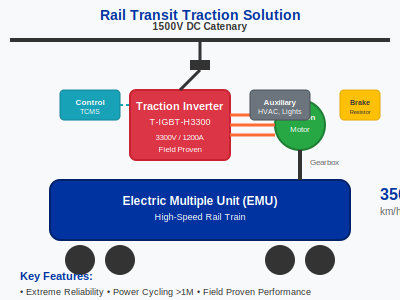

Power Module Solution for Rail Transit Traction Inverters
Traction inverters are the heart of modern electric railways, and their reliability is paramount. This solution leverages CRRC Times Electric's field-proven, high-voltage IGBT modules to create a traction inverter design that delivers exceptional performance, efficiency, and a service life measured in decades.
Key Advantages
- Extreme Reliability: Built with modules that are specifically designed and qualified for the harsh vibration, temperature, and humidity conditions of railway operation.
- High Efficiency: Utilizes IGBTs with low VCE(sat) and optimized switching characteristics to minimize power loss, reducing cooling requirements and operational costs.
- Proven in the Field: These components are the backbone of one of the world's largest high-speed rail networks, representing millions of kilometers of successful operation.
- System Scalability: Modules can be paralleled to achieve the multi-megawatt power levels required for heavy-haul locomotives.
Recommended Bill of Materials (BOM)
| Component Role | Recommended Part Number | Reason |
|---|---|---|
| Main Inverter IGBT | T-IGBT-H3300 | 3300V rating provides a robust safety margin for 1500V DC catenary lines. Designed for extreme power cycling. |
| Auxiliary Converter IGBT | [To be created: T-IGBT-A1700] | A smaller 1700V module to power the train's auxiliary systems like HVAC and lighting. |
| Gate Driver Board | [Recommended Partner Part] | Must provide high isolation voltage and protection features suitable for high-power traction. |